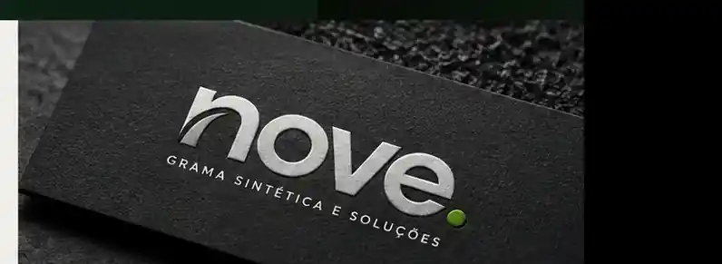

01
Planejamento
Entender o espaço, o uso pretendido e o que a operação precisa para funcionar.
Em uma residência, isso pode significar conforto e praticidade. Em uma empresa, apresentação e durabilidade.
Em uma arena, significa performance, experiência e retorno. A NOVE cuida do processo para transformar a ideia em um espaço pronto para ser vivido.
O material certo depende do uso, da base, da exposição e da rotina do espaço. A escolha começa entendendo o ambiente, não escolhendo um catálogo.
O resultado não é só visual. Uma superfície precisa funcionar no dia a dia, envelhecer bem e continuar fazendo sentido depois da instalação.
Projeto, execução, acabamento e manutenção precisam conversar desde o início.
A seleção pública de projetos está sendo organizada com material real da NOVE. Para avaliar uma solução agora, envie o tipo de espaço e peça referências disponíveis para o seu caso.
Pedir referências do meu tipo de projeto
Seleção em atualização. A publicação entra somente com material real e identificado da NOVE.
Ver atualizações no InstagramArraste a divisão para comparar base e superfície. A estrutura foi preparada para receber pares reais de antes e depois assim que o acervo estiver disponível.
Mais que instalar gramado. A estrutura precisa ser pensada para receber pessoas, partidas e novas oportunidades de uso.
Entender o espaço, o uso pretendido e o que a operação precisa para funcionar.
Organizar a base e as condições necessárias para a próxima etapa.
Construir a composição que dará suporte à superfície e ao uso do ambiente.
Executar com atenção a alinhamento, acabamento e comportamento da superfície.
Finalizar o espaço pronto para começar a ser usado e preparado para continuar bem cuidado.
Uma sequência clara para reduzir dúvida antes da execução e deixar cada decisão ligada ao uso real do espaço.
Uso, contexto e prioridade.
Material, composição e abordagem.
Base pronta para executar bem.
Instalação e acabamento.
Espaço pronto para uso.
Conte o tipo de espaço, a cidade e uma medida aproximada. O site monta um briefing curto para você enviar à NOVE.